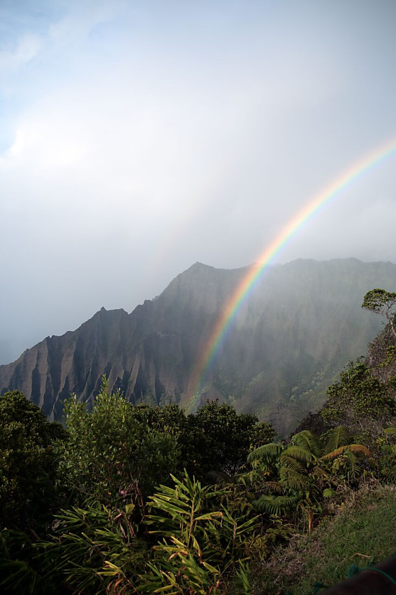

Kōkeʻe State Park
Place: Kōkeʻe State Park, Kauaʻi
Type: State park / native forest / mountain plateau
Story it tells: A high-elevation forest where ancient Hawaiian trails, rare native ecosystems, and more than a century of conservation have preserved one of Hawaiʻi's most important mountain landscapes.

Kōkeʻe State Park occupies more than 4,300 acres across Kauaʻi's rugged uplands above Waimea Canyon. Sitting between roughly 3,200 and 4,200 feet above sea level, the park serves as the gateway to the Alakaʻi Plateau, the Kalalau Trail overlooks, and some of Hawaiʻi's most intact native forests. The name kōkeʻe means "to bend," "to wind," or "to zig-zag," a fitting description for the twisting ridges, winding trails, and sharp mountain roads that traverse this dramatic landscape.
In pre-Western contact times, the plateau formed an important inland route connecting Waimea with the communities of Kauaʻi's north shore when the sheer cliffs of the Nā Pali Coast made coastal travel impossible. Travelers navigated muddy bogs and steep ridges while gathering valuable forest resources including koa for canoes, olonā fiber for fishing lines and feather cloaks, and medicinal plants found only in the cool cloud forests. The upper forests also belonged to the Wao Akua, the "realm of the gods," where priests built small shrines and offered prayers for the rains that sustained life below.
Today Kōkeʻe protects one of the oldest native forest ecosystems in the Hawaiian Islands. Dominated by towering ʻōhiʻa lehua and koa trees, the forest acts as a giant sponge, capturing moisture from passing clouds that feeds Kauaʻi's streams and replenishes the aquifers. Rare plants such as the endemic ʻiliau grow nowhere else on Earth, while native forest birds struggle to survive in these higher elevations where cooler temperatures have slowed the spread of mosquito-borne diseases. The park also provides the primary access to the neighboring Alakaʻi Wilderness Preserve, one of the highest cloud forests and bog ecosystems in the world.
Seeking respite following the deaths of King Kamehameha IV and their young son, Prince Albert, Queen Emma led a large royal party across the Kōkeʻe plateau and through Alakaʻi Swamp toward Kilohana Lookout overlooking Hanalei. Guides constructed makeshift walkways from tree ferns to help the party cross the deep mountain bogs, while Queen Emma encouraged her companions with mele and hula during the arduous journey. Among the young guides was John Mortimer Lydgate, whose detailed recollections preserve one of the best firsthand accounts of the 1871 journey through Kōkeʻe.
The forests faced tremendous challenges following Western contact. Escaped cattle, goats, and pigs trampled the delicate understory, while sandalwood harvesting and commercial logging stripped many slopes of their native trees. A devastating wildfire in 1887 exposed just how critical the mountain forests were to Kauaʻi's water supply, prompting the territorial government to establish forest reserves that eventually led to the creation of Kōkeʻe State Park in 1909. Later, the Civilian Conservation Corps built many of the park's roads, trails, cabins, and public facilities during the 1930s, many of which remain in use today.
Visitors now come to Kōkeʻe for reasons that have changed little over the past century: breathtaking overlooks above Waimea Canyon and the Nā Pali Coast, cool mountain air, hiking trails, native forests, birdwatching, and a sense of remoteness unlike almost anywhere else in Hawaiʻi. At the same time, conservationists continue the work of protecting rare plants, endangered birds, and fragile watersheds from invasive species, wildfire, and disease. The winding ridges that gave Kōkeʻe its name continue to guide visitors through one of Hawaiʻi's greatest mountain landscapes.